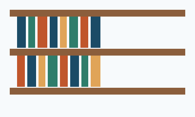

Empréstimo de livros
Acervo físico, digital e em áudio, sem taxas, para toda a família.
Um espaço de leitura pensado para todas as pessoas: acervo acessível, tecnologia assistiva e atividades para todas as idades.
Faça sua carteirinhaConheça o que oferecemos para a comunidade
Acervo físico, digital e em áudio, sem taxas, para toda a família.
Encontros semanais de contação de histórias e clube do livro.
Computadores com leitor de tela e mesas adaptadas para cadeira de rodas.
Aberta de segunda a sábado, com horários noturnos duas vezes por semana.
Estrutura pensada para receber todo mundo
Acervo específico para pessoas com deficiência visual, com atendente treinado.
Equipe com intérprete de Libras em horários fixos, publicados no mural de entrada.
Rampas, banheiro adaptado e corredores largos entre as estantes.

Somos uma biblioteca comunitária mantida por voluntários, com o compromisso de que ninguém fique de fora por causa de renda, idade ou deficiência. Leitura é para todo mundo.
Preencha e retornaremos em breve